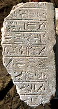
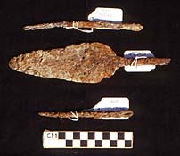
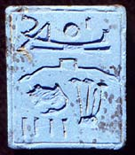

|
A
Stela of King Osorkon III
Page 3 of 5
Over
300 pieces were recovered of a large stela of calcite, originally
some 2.5 metres high and inscribed with a long text from the reign
of King Osorkon III (c. 750 BC). Although much of the stela was missing,
sufficient could be restored to show that the text described donations
of land and other property. At the top of the stela was a relief showing
King Osorkon III, his wife Queen Karotja and parts of two other figures
bringing offerings to Osiris, Horus and Isis. The identity of the
last two figures was not preserved in the inscriptions, but they could
represent the crown-prince Takeloth, later King Takeloth III, and
either Prince Amonrud or Princess Shepenwepet. The name of Amonrud
was found on an inscribed block discovered nearby.
|
|
 |
Houses
in the Western Part of the Town
|
|
In the years
1985 to 1990 the British Museum expedition moved from the investigation
of the temple complex to the excavation of houses of the Third Intermediate
Period (c.1000-650 BC) in the western part of the site. The houses
were well-built structures of sun-dried bricks and seem to have
belonged to people of some wealth, to judge from the fine objects
left behind. In addition to much good-quality pottery there were
inscribed amulets and scarabs, tools and weapons of bronze and iron,
and decorative lamp-stands of glazed faience.
|
|

|
| Although
the houses probably had two storeys originally, only the ground-floors
were preserved, containing characteristic features of Egyptian village
architecture such as clay bread-ovens. Three successive levels of
building were identified and recorded. |
|
 |
Pages 1
| 2 | 3 | 4
| 5
|
|